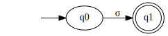
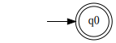
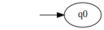
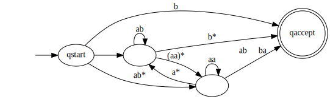
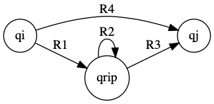
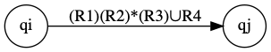
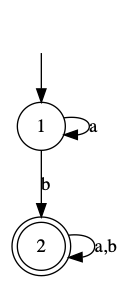
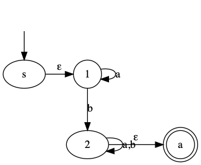
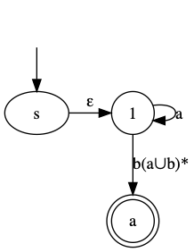
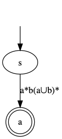

FLAT
5. Regular Expressions
October 13, 2019
Roadmap for Lecture
- Review NFAs
- Prove that NFAs and DFAs are equivalent.
- Use NFAs to show that when each of the regular operation is applied on regular languages it yields yet another regular language.
Review
- Theorem 1.45 The class of regular languages is closed under the union operation.
- Theorem 1.47 The class of regular languages is closed under the concatenation operation.
- Theorem 1.49 The class of regular languages is closed under the star operation.
Regular Expressions
Introduction
- Regular languages are defined and described by use of finite automata.
- In this lecture, we introduce Regular Expressions as an equivalent way, yet more elegant, to describe regular languages.
Motivation
- If one wants to describe a regular language, L_a they can use the a DFA, D or an NFA N , such that that L ( D ) = L_a
- This is not always very convenient.
- Consider for example the regular expression 0^*10^* describing the language of binary strings containing a single 1.
Basic Regular Expressions
- A Regular Expression (RE in short) is a string of symbols that describes a regular Language.
- Let be an alphabet. For each \sigma \in \Sigma, the symbol \sigma is an RE representing the set \{\sigma\}
- The symbol \epsilon is an RE representing the set \{\epsilon\} (The set containing the empty string).
- The symbol \emptyset is an RE representing the empty set.
Ind. Construction
- Let R_1 and R_2 be two regular expressions representing languages L_1 and L_2, respectively
- The string (R_1 \cup R_2) is a regular expression representing the set L_1 \cup L_2
- The string (R_1 R_2) is a regular expression representing the set L_1 \circ L_2.
- The string (R_1)^* is a regular expression representing the set L_1^*.
Ind. Construction
- Note that in the inductive part of the definition larger REs are defined by smaller ones. This ensures that the definition is not circular.
- This inductive definition also dictates the way we will prove theorems:
- Stage 1: Prove T_e correct for all base cases.
- Stage 2: Assume T_ e is correct for and and prove its correctness for (R_1 \cup R_2) (R_1 R_2) (R_1)^*
Useful Notation
- Let R be a regular expression
- The string R^+ represents RR^*, and it also holds that R^+ \cup \{ \epsilon \} = R^*
- The string R^K represents \underbrace{RR...R}_{k \text{ times}}
- The string \Sigma represents \{ \sigma_1, \sigma_2, ..., \sigma_k\}
- The Language represented by R is denoted by L(R)
Precedence Rules
- The star (^*) operation has the highest precedence.
- The concatenation (\circ ) operation is second on the preference order.
- The union (\cup ) operation is the least preferred.
- Parentheses can be omitted using these rules.
Examples
- 0^*10* - { w | w contains a single 1 }
- \Sigma^*1\Sigma^* - { w | w has at least a single 1 }
- \Sigma^*(str)\Sigma^* - { w | w contains str as a substring}
- 1^*(01^+)^* - { w | every 0 in w is followed by at least a single 1}
- (\Sigma \Sigma)^* - { w | w is of even length }
Examples
- 0 \Sigma^* 0 \cup 1 \Sigma^*1 \cup 0 \cup 1 - all words starting and ending with the same letter.
- (0 \cup \epsilon)1^* = 01^* \cup 1^* - all strings of forms 1,11, 111… and 0,01,011….
- R \emptyset = \emptyset - A set concatenated with the empty set yields the empty set.
- \emptyset^* - \emptyset^* = \{\epsilon\}
FA Equivalence
- Regular expressions and finite automata are equivalent in their descriptive power.
- This fact is expressed in the following Theorem:
- Theorem 1.54 A language is regular if and only if some regular expression describes it.
- The proof is by two Lemmata (Lemmas)
If and Only If
- To prove this an “if and only if” statement, we must prove it in “both directions”
- We will express these two parts of the theorem as two lemmata (lemmas)
- Theorem 1.54 A language is regular if and only if some regular expression describes it.
- We showed that this theorem must be proved in both directions:
- Lemma 1.55 If a language is described by a regular expression, then it is regular.
- Lemma 1.60 If a language is regular, then it is described by a regular expression.
Lemma 1.55
- If a language L can be described by regular expression then L is regular.
Inductive Proofs
- This inductive definition of Regular expressions dictates the way we will prove theorems.
- The proof for the Theorem follows the following stages:
- Stage 1: Prove correctness for all base cases.
- Stage 2: Assume correctness for R_1 and R_2, and show its correctness for (R_1 \cup R_2), (R_1 R_2), \text{ and } (R_1)^*
Induction Basis
- For any \sigma \in \Sigma, the expression \sigma describes the set \{ \sigma \}, recognized by

Induction Basis
- The set represented by the expression \epsilon is recognized by:

Induction Basis
- The set represented by the expression \emptyset is recognized by:

Induction Step
- Now, we assume that R_1 and R_2 represent two regular sets and claim that R_1 \cup R_2, R_1 \circ R_2 \text{ and } R_1^* represent the corresponding regular sets.
- The proof for this claim is straight forward using the constructions given in the proof for the closure of the three regular operations.
Examples
Show that the following regular expressions represent regular languages:
- (ab \cup a)^*
- (a \cup b)^*aba
Example
- (ab \cup a)^*
a

b

ab

Example 1
ab \cup a

Example 1
(ab \cup a)^*

Example 2
- (a \cup b)^*aba
Design the NFA that recognizes the language of this regular expression.
Lemma 1.60
If a language L is regular then L can be describe by a regular expression
Proof Stages
The proof follows the following stages:
- Define Generalized Nondeterministic Finite Automaton (GNFA in short).
- Show how to convert any DFA to an equivalent GNFA.
- Show an algorithm to convert any GNFA to an equivalent GNFA with 2 states.
- Convert a 2-state GNFA to an equivalent RE.
GNFA Properties
- A GNFA is a finite automaton in which each transition is labeled with a regular expression over the alphabet.
- A single initial state with all possible outgoing transitions and no incoming transitions
- A single final state without outgoing transitions
- A single transition between every two states, including self loops.
Example of a Generalized NFA

GNFA Computation
- A computation of a GNFA is similar to a computation of an NFA. except:
- In each step, a GNFA consumes a block of symbols that matches the RE on the transition used by the NFA.
Example of a GNFA Computation
Consider abbbaaaaabbbbb or bb or abba
DFA->GNFA Conversion
Conversion is done by a very simple process:
- Add a new start state with an \epsilon-transition from the new start state to the old start state.
- Add a new accepting state with \epsilon-transition from every old accepting state to the new accepting state.
DFA->GNFA Conversion
- Replace any transition with multiple labels by a single transition labeled with the union of all labels.
- Add any missing transition, including self transitions; label the added transition by \emptyset.
DFA->GNFA Conversion
- The final element needed for the proof is a procedure in which for any GFN G , any state of G , not including q_{start} and q_{accept}, can be ripped off G , while preserving the language.
- This is demonstrated in the next slide by considering a general state, denoted by q_{rip} , and an arbitrary pair of states, q_i and q_j
State Removal
Before Ripping

After Ripping

*Note: this should be done for every pair of outgoing and incoming transitions for q_{rip}
Elaboration
- Consider the RE (R_1)(R_2)^*R_3, representing all strings that enable transition from q_i via q_{rip} to q_j.
- What we want to do is to augment the Regular expression of transition (q_i, q_j), namely R_4, so these strings can pass through (q_i, q_j)
- This is done by setting it to R_4 \cup (R_1)(R_2)^*R_3
Elaboration
- Note that this change does not affect all pairs in which either (q_i, q_{rip} or (q_j, q_{rip} participate.
- Thus, before is removed all these pairs should be processed in the same way, as demonstrated on the next slide.
Elaboration

- In order to rip , all pairs of incoming and outgoing transitions should be considered in the way showed on the previous slide
- Specifically consider: (t1, t4), (t1, t5), (t2, t4), (t2, t5), (t3, t4), (t3, t5), one after the other
- After that q_{rip} can be ripped while preserving L(G).
Partial Proof
- The first step is to formally define a GNFA.
- Each transition should be labeled with an RE.
- Define the transition function as follows:
\delta : (Q - \{q_{accept}\}) \times (Q - \{q_{start}\})\longrightarrow RE_\Sigma
- where RE_\Sigma denotes all regular expressions over \Sigma.
Changes in delta Definition
\delta : (Q - \{q_{accept}\}) \times (Q - \{q_{start}\})\longrightarrow RE_\Sigma
- **Note: this definition is different than the original definitions (For DFA and NFA).
- In this definition we rely on the fact that every 2 states (except and ) are connected in both directions.
GNFA Definition
A Generalized Finite Automaton is a 5-tuple (Q,\Sigma,\delta,q_0 ,F)
- Q is a finite set called the states.
- \Sigma is a finite set called the alphabet.
- \delta : (Q - \{q_{accept}\}) \times (Q - \{q_{start}\})\rightarrow RE_\Sigma is the transition function.
- q_{start} \in Q is the start state, and
- q_{accept} \in Q ,is the accept state.
Defining GNFA Computation
- A GNFA accepts a string w \in \Sigma^* if w=w_1w_2...w_k and there exists a sequence of states q_{start}q_1q_2...q_{accept}, satisfying:
- For each i, 1 \leq i \leq k, w_i \in L(R_i)
- where R_i = \delta(q_{i-1}, q_i), or in other words, is the expression on the arrow from q_i to q_{i+1}.
CONVERT
- Procedure CONVERT takes as input a GNFA G with k states.
- If k=2 then these 2 states must be q_{start} and q_{end}, and the algorithm returns \delta(q_{start}, q_{end}
- If k>2, the algorithm converts G to an equivalent G’ with k-1 states by use of the ripping procedure described before.
CONVERT
- k \longleftarrow|Q_G|;
- if(k=2) return \delta(q_{start}, q_{end});
- q_{rip} \longleftarrow GetRandomState(Q_G);
- Q' \longleftarrow Q_G - q_{rip};
- \text{For any }q_i \in Q'-q_{accept} \text{ and any } q_j \in Q'-q_{start}:
\delta : (Q - \{q_{accept}\}) \times (Q - \{q_{start}\})\longrightarrow RE_\Sigma \\ for R_1 = \delta(q_i, q_{rip}) R_2 = \delta(q_{rip}, q_{rip}) R_3=\delta(q_{rip}, q_i) R_4 = \delta(q_i, q_j) 6. \text{return }G' = (Q', \Sigma, \delta ', q_{start}, q_{accept});
Example: NFA-> GNFA-> RE

Example: NFA -> GNFA -> RE

Example: NFA -> GNFA -> RE

Example: NFA -> GNFA -> RE

Review
- In this lecture we introduced a new theorem:
- Theorem 1.54 A language is regular if and only if some regular expression describes it.
- We showed that this theorem must be proved in both directions:
- Lemma 1.55 If a language is described by a regular expression, then it is regular.
- Lemma 1.60 If a language is regular, then it is described by a regular expression.
Review
- Motivated and defined regular expressions as a more concise and elegant method to represent Regular Languages.
- Proved that FAs (Deterministic as well as Nondeterministic) and REs is identical by: 2.1 Defined GNFAs. 2.2 Showed how to convert a DFA to a GNFA. 2.3 Showed an algorithm to converted a GNFA with K states to an equivalent GNFA with K-1 states.